VFD3 Series

Series III systems use bright vacuum fluorescent displays: easy to read, accurate, and built for years of trouble-free driving.
Direct-fit kits use the stock bezel of many classic cars and trucks, and universal panels fit custom dashes. Displays come in blue or teal.
114 products
 1932 Chevy Digital Instrument SystemVFD3-32C$815.00
1932 Chevy Digital Instrument SystemVFD3-32C$815.00- 1932 Ford Digital Instrument SystemVFD3-32F$815.00
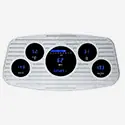
1933 -1934 Ford Digital Instrument SystemVFD3-34F, VFD3-34F-CMPLT$815.00 1933-34 Chevy Master Digital Instrument SystemVFD3-33C-M$150.00
1933-34 Chevy Master Digital Instrument SystemVFD3-33C-M$150.00 1933-35 Chevy Standard Digital Instrument SystemVFD3-33C-S$865.00
1933-35 Chevy Standard Digital Instrument SystemVFD3-33C-S$865.00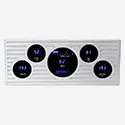
1935 -1936 Ford Digital Instrument SystemVFD3-35F$815.00 1935 -1937 Ford Pickup Digital Instrument SystemVFD3-35F-PU$815.00
1935 -1937 Ford Pickup Digital Instrument SystemVFD3-35F-PU$815.00 1935 Chevy Master/1936 Chevy Digital Instrument SystemVFD3-36C$865.00
1935 Chevy Master/1936 Chevy Digital Instrument SystemVFD3-36C$865.00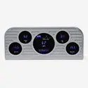
1937 -1938 Ford Digital Instrument SystemVFD3-37F$815.00 1937-38 Chevy Digital Instrument SystemVFD3-37C$815.00
1937-38 Chevy Digital Instrument SystemVFD3-37C$815.00 1939 Chevy Digital Instrument SystemVFD3-39C$815.00
1939 Chevy Digital Instrument SystemVFD3-39C$815.00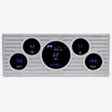
1939 Ford Digital Instrument SystemVFD3-39F$815.00 1940 Chevy Original Bezel Digital Instrument SystemVFD3-40C-O$815.00
1940 Chevy Original Bezel Digital Instrument SystemVFD3-40C-O$815.00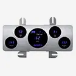
1940 Ford Digital Instrument SystemVFD3-40F$815.00 1940-46 Chevy/ GMC Pickup Digital Instrument SystemVFD3-40C-PU$815.00
1940-46 Chevy/ GMC Pickup Digital Instrument SystemVFD3-40C-PU$815.00 1940-47 Ford Pickup Digital Instrument SystemVFD3-40F-PU$815.00
1940-47 Ford Pickup Digital Instrument SystemVFD3-40F-PU$815.00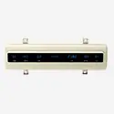
1941 Ford Digital Instrument SystemVFD3-41F-O, VFD3-41F-PR$835.00 1941-48 Chevy Aluminum Bezel Digital Instrument SystemVFD3-41C$835.00
1941-48 Chevy Aluminum Bezel Digital Instrument SystemVFD3-41C$835.00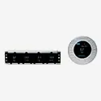
1942 -1948 Ford/ Mercury Digital Instrument SystemVFD3-42F-O$835.00 1947-53 Chevy/ GMC Pickup Digital Instrument SystemVFD3-47C-PU$835.00
1947-53 Chevy/ GMC Pickup Digital Instrument SystemVFD3-47C-PU$835.00 1948 -1950 Ford F1 Pickup Digital Instrument SystemVFD3-48F-PU$815.00
1948 -1950 Ford F1 Pickup Digital Instrument SystemVFD3-48F-PU$815.00- 1949 -1950 Ford Digital Instrument SystemVFD3-49F$815.00
 1949-1950 Chevy Digital Instrument SystemVFD3-49C$775.00
1949-1950 Chevy Digital Instrument SystemVFD3-49C$775.00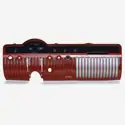
1950 -1951 Mercury Digital Instrument SystemVFD3-50M, VFD3-50M-CLK$865.00 1951 -1952 Chevy Digital Instrument SystemVFD3-51C$865.00
1951 -1952 Chevy Digital Instrument SystemVFD3-51C$865.00- 1951 Ford Digital Instrument SystemVFD3-51F$775.00
 1951-1952 Ford Pickup Digital Instrument SystemVFD3-51F-PU$865.00
1951-1952 Ford Pickup Digital Instrument SystemVFD3-51F-PU$865.00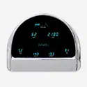
1952-53 Ford Digital Instrument SystemVFD3-52F$775.00 1953 -1954 Chevy Digital Instrument SystemVFD3-53C, VFD3-53C-C$835.00
1953 -1954 Chevy Digital Instrument SystemVFD3-53C, VFD3-53C-C$835.00 1953-1955 Ford F100 Pickup Digital Instrument SystemVFD3-53F-PU-O, VFD3-53F-PU-A$815.00
1953-1955 Ford F100 Pickup Digital Instrument SystemVFD3-53F-PU-O, VFD3-53F-PU-A$815.00 1954 Chevy Series One Pickup Digital Instrument SystemVFD3-54C-PU$835.00
1954 Chevy Series One Pickup Digital Instrument SystemVFD3-54C-PU$835.00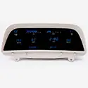
1954 Mercury Digital Instrument SystemVFD3-54M$815.00 1955-56 Chevy Digital Instrument SystemVFD3-55C$725.00
1955-56 Chevy Digital Instrument SystemVFD3-55C$725.00 1955-59 Chevy Pickup Digital Instrument SystemVFD3-55C-PU$725.00
1955-59 Chevy Pickup Digital Instrument SystemVFD3-55C-PU$725.00 1955-86 Jeep CJ Series Digital Instrument SystemVFD3-55J-CJ$705.00
1955-86 Jeep CJ Series Digital Instrument SystemVFD3-55J-CJ$705.00 1956 Ford Pickup Digital Instrument SystemVFD3-56F-PU-O$815.00
1956 Ford Pickup Digital Instrument SystemVFD3-56F-PU-O$815.00 1957 Chevy Digital Instrument SystemVFD3-57C, CLK-57C$775.00
1957 Chevy Digital Instrument SystemVFD3-57C, CLK-57C$775.00 1957-60 Ford Pickup & 1961-67 Econoline Van/ Pickup Digital Instrument SystemVFD3-57F-PU$775.00
1957-60 Ford Pickup & 1961-67 Econoline Van/ Pickup Digital Instrument SystemVFD3-57F-PU$775.00 1958 Chevy Impala Digital Instrument SystemVFD3-58C-IMP$865.00
1958 Chevy Impala Digital Instrument SystemVFD3-58C-IMP$865.00 1958-62 Chevy Corvette Digital Instrument SystemVFD3-58C-VETTE$1,650.00
1958-62 Chevy Corvette Digital Instrument SystemVFD3-58C-VETTE$1,650.00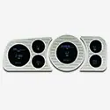
1958-77 Volkswagen Beetle Digital InstrumentsVFD3-VW$815.00 1959-60 Chevy Impala/ El Camino Digital Instrument SystemVFD3-59C-IMP$815.00
1959-60 Chevy Impala/ El Camino Digital Instrument SystemVFD3-59C-IMP$815.00 1960-63 Chevy Pickup Digital Instrument SystemVFD3-60C-PU$835.00
1960-63 Chevy Pickup Digital Instrument SystemVFD3-60C-PU$835.00 1961 -1966 Ford Pickup Digital Instrument SystemVFD3-66F-BRONCO$705.00
1961 -1966 Ford Pickup Digital Instrument SystemVFD3-66F-BRONCO$705.00 1961-62 Chevy Impala Digital Instrument SystemVFD3-61C-IMP$865.00
1961-62 Chevy Impala Digital Instrument SystemVFD3-61C-IMP$865.00 1963-64 Chevy Impala Digital Instrument SystemVFD3-63C-IMP, VFD3-63C-IMP-CLK$865.00
1963-64 Chevy Impala Digital Instrument SystemVFD3-63C-IMP, VFD3-63C-IMP-CLK$865.00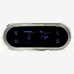
1963-65 Chevy Nova Digital Instrument SystemVFD3-63C-NOV$835.00 1963-67 Chevy Corvette Digital Instrument SystemVFD3-63C-VETTE$1,265.00
1963-67 Chevy Corvette Digital Instrument SystemVFD3-63C-VETTE$1,265.00 1963-72 Jeep Wagoneer/ J-Trucks, 1967-72 Jeepster Commando Digital Instrument SystemVFD3-63J-WJ$775.00
1963-72 Jeep Wagoneer/ J-Trucks, 1967-72 Jeepster Commando Digital Instrument SystemVFD3-63J-WJ$775.00 1964-65 Chevy Chevelle/ El Camino Digital Instrument SystemVFD3-64C-CVL, VFD3-65C-CVL$995.00
1964-65 Chevy Chevelle/ El Camino Digital Instrument SystemVFD3-64C-CVL, VFD3-65C-CVL$995.00 1964-66 Chevy Pickup Digital Instrument SystemVFD3-64C-PU$835.00
1964-66 Chevy Pickup Digital Instrument SystemVFD3-64C-PU$835.00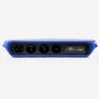
1964-67 Pontiac GTO/ LeMans/ Tempest Digital InstrumentsVFD3-64P-GTO, CLK-64P-GTO$865.00 1965 Chevy Caprice/ Impala Digital Instrument SystemVFD3-65C-IMP, VFD3-65C-IMP-CLK$865.00
1965 Chevy Caprice/ Impala Digital Instrument SystemVFD3-65C-IMP, VFD3-65C-IMP-CLK$865.00 1965-66 Ford Mustang Digital Instrument SystemVFD3-65M, VFD3-65M-W, VFD3-65M-GT$775.00
1965-66 Ford Mustang Digital Instrument SystemVFD3-65M, VFD3-65M-W, VFD3-65M-GT$775.00 1966 Chevy Caprice/Impala Digital Instrument SystemVFD3-66C-IMP$885.00
1966 Chevy Caprice/Impala Digital Instrument SystemVFD3-66C-IMP$885.00 1966-67 Chevy Chevelle/El Camino Digital Instrument SystemVFD3-66C-CVL$925.00
1966-67 Chevy Chevelle/El Camino Digital Instrument SystemVFD3-66C-CVL$925.00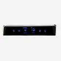
1966-67 Chevy Nova Digital Instrument SystemVFD3-66C-NOV, VFD3-67C-NOV$965.00 1966-77 Ford Bronco Digital Instrument SystemVFD3-66F-BRONCO$705.00
1966-77 Ford Bronco Digital Instrument SystemVFD3-66F-BRONCO$705.00 1967 Chevy Caprice/Impala Digital Instrument SystemVFD3-67C-IMP$885.00
1967 Chevy Caprice/Impala Digital Instrument SystemVFD3-67C-IMP$885.00 1967 Ford Mustang Digital Instrument SystemVFD3-67M$815.00
1967 Ford Mustang Digital Instrument SystemVFD3-67M$815.00 1967-68 Camaro/ Firebird Digital Instrument SystemVFD3-67C-CAM$775.00
1967-68 Camaro/ Firebird Digital Instrument SystemVFD3-67C-CAM$775.00 1967-72 Chevy/ GMC Pickup Digital Instrument SystemVFD3-67C-PU$835.00
1967-72 Chevy/ GMC Pickup Digital Instrument SystemVFD3-67C-PU$835.00 1967-72 Ford Pickup Digital Instrument SystemVFD3-67F-PU$775.00
1967-72 Ford Pickup Digital Instrument SystemVFD3-67F-PU$775.00 1968 Chevy Caprice/Impala Digital Instrument SystemVFD3-68C-IMP$885.00
1968 Chevy Caprice/Impala Digital Instrument SystemVFD3-68C-IMP$885.00 1968 Chevy Chevelle/ El Camino Digital Instrument SystemVFD3-68C-CVL$885.00
1968 Chevy Chevelle/ El Camino Digital Instrument SystemVFD3-68C-CVL$885.00 1968 Ford Mustang Digital Instrument SystemVFD3-68M, VFD3-68M-W$815.00
1968 Ford Mustang Digital Instrument SystemVFD3-68M, VFD3-68M-W$815.00 1968-77 Chevy Corvette Digital Instrument SystemVFD3-68C-VETTE$1,395.00
1968-77 Chevy Corvette Digital Instrument SystemVFD3-68C-VETTE$1,395.00 1969 Camaro Digital Instrument ClusterVFD3-69C-CAM$995.00
1969 Camaro Digital Instrument ClusterVFD3-69C-CAM$995.00 1969 Chevy Chevelle/ Malibu/ El Camino Digital Instrument SystemVFD3-69C-CVL$885.00
1969 Chevy Chevelle/ Malibu/ El Camino Digital Instrument SystemVFD3-69C-CVL$885.00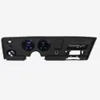
1969 Pontiac Firebird Digital InstrumentsVFD3-69P-FIR$725.00 1969-70 Chevy Caprice/Impala Digital Instrument SystemVFD3X-69C-IMP$895.00
1969-70 Chevy Caprice/Impala Digital Instrument SystemVFD3X-69C-IMP$895.00 1969-70 Ford Mustang Digital Instrument SystemVFD3-69M$885.00
1969-70 Ford Mustang Digital Instrument SystemVFD3-69M$885.00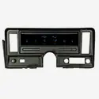
1969-76 Chevy Nova, 73-75 Buick Apollo, 75-76 Skylark, 73-76 Olds Omega, 71-76 Pontiac VenturaVFD3-69C-NOV$885.00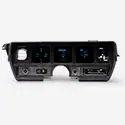
1970-72 Buick Skylark Digital Instrument SystemVFD3-70B-SKY$865.00 1970-72 Chevy Chevelle SS/Monte Carlo/El Camino & 71 GMC Sprint SP Digital Instrument SystemVFD3-70C-CVL$965.00
1970-72 Chevy Chevelle SS/Monte Carlo/El Camino & 71 GMC Sprint SP Digital Instrument SystemVFD3-70C-CVL$965.00 1970-72 Chevy Malibu/ non SS Chevelle/ El Camino Digital Instrument SystemVFD3-70C-MAL$965.00
1970-72 Chevy Malibu/ non SS Chevelle/ El Camino Digital Instrument SystemVFD3-70C-MAL$965.00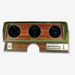
1970-72 Oldsmobile Cutlass and 442 Digital Instrument SystemVFD3-70o-CUT$885.00 1970-81 Camaro Digital Instrument ClusterVFD3-70C-CAM$965.00
1970-81 Camaro Digital Instrument ClusterVFD3-70C-CAM$965.00 1971-73 Ford Mustang Digital Instrument SystemVFD3-71M, VFD3-71M-CNT, CLK-71M$775.00
1971-73 Ford Mustang Digital Instrument SystemVFD3-71M, VFD3-71M-CNT, CLK-71M$775.00 1971-76 Chevy Caprice/ Impala Digital Instrument SystemVFD3X-71C-IMP$895.00
1971-76 Chevy Caprice/ Impala Digital Instrument SystemVFD3X-71C-IMP$895.00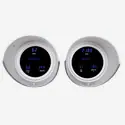
1973-77 Oldsmobile Cutlass Digital Instrument SystemVFD3-73o-CUT$885.00 1973-79 Ford Pickup, Van and 78-79 Bronco Digital Instrument SystemVFD3-73F-PU$775.00
1973-79 Ford Pickup, Van and 78-79 Bronco Digital Instrument SystemVFD3-73F-PU$775.00 1973-85 Jeep Wagoneer/ Cherokee/ J-Trucks Digital Instrument SystemVFD3-73J-WAG$745.00
1973-85 Jeep Wagoneer/ Cherokee/ J-Trucks Digital Instrument SystemVFD3-73J-WAG$745.00 1973-87 Chevy Pickup, 1973-91 Chevy Blazer, GMC Jimmy and Suburbans Digital Instrument SystemVFD3-73C-PU$875.00
1973-87 Chevy Pickup, 1973-91 Chevy Blazer, GMC Jimmy and Suburbans Digital Instrument SystemVFD3-73C-PU$875.00 1977-90 Chevy Caprice/ Impala Digital Instrument SystemVFD3-77C-CAP$885.00
1977-90 Chevy Caprice/ Impala Digital Instrument SystemVFD3-77C-CAP$885.00 1978-82 Chevy Corvette Digital Instrument SystemVFD3-78C-VETTE$1,399.00
1978-82 Chevy Corvette Digital Instrument SystemVFD3-78C-VETTE$1,399.00 1978-88 Chevy Monte Carlo, 1978-87 Chevy El Camino/ Malibu/ Caballero Digital Instrument SystemVFD3-81C-MC$885.00
1978-88 Chevy Monte Carlo, 1978-87 Chevy El Camino/ Malibu/ Caballero Digital Instrument SystemVFD3-81C-MC$885.00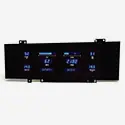
1978-88 Oldsmobile Cutlass Digital Instrument SystemVFD3-78o-CUT$885.00 1982 -1989 Chevy Camaro Digital Instrument SystemVFD3-82C-CAM$815.00
1982 -1989 Chevy Camaro Digital Instrument SystemVFD3-82C-CAM$815.00 1982-1985 Chevy/ GMC S-10, S-15 Pickups and Blazers Digital Instrument SystemVFD3-82C-S10$745.00
1982-1985 Chevy/ GMC S-10, S-15 Pickups and Blazers Digital Instrument SystemVFD3-82C-S10$745.00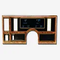
1984-87 Buick Regal/ Grand National/ T-Type/ GNX Digital Instrument SystemVFD3-82B-REG$885.00 1984-89 Chevy Corvette Digital Instrument SystemVFD3-84C-VETTE$1,245.00
1984-89 Chevy Corvette Digital Instrument SystemVFD3-84C-VETTE$1,245.00 1986-91 Jeep Wagoneer/ 1986-88 J-Trucks Digital Instrument SystemVFD3-86J-WAG$745.00
1986-91 Jeep Wagoneer/ 1986-88 J-Trucks Digital Instrument SystemVFD3-86J-WAG$745.00 1986-93 Chevy/ GMC S-10/ S-15 Pickups and 1986-94 S-10/ S-15 Blazers/ Jimmy'sVFD3-86C-S10$745.00
1986-93 Chevy/ GMC S-10/ S-15 Pickups and 1986-94 S-10/ S-15 Blazers/ Jimmy'sVFD3-86C-S10$745.00 1988-91 Chevy/ GMC Pickup Digital Instrument SystemVFD3-88C-PU-U$815.00
1988-91 Chevy/ GMC Pickup Digital Instrument SystemVFD3-88C-PU-U$815.00 1991-93 Chevy Caprice w/ OEM Digital Speedo, 91-93 Buick Roadmaster, 91-92 Olds Custom CruiserVFD3-91C-CAP-D$885.00
1991-93 Chevy Caprice w/ OEM Digital Speedo, 91-93 Buick Roadmaster, 91-92 Olds Custom CruiserVFD3-91C-CAP-D$885.00 1991-93 Chevy Caprice with Factory Analog GaugesVFD3-91C-CAP-A$885.00
1991-93 Chevy Caprice with Factory Analog GaugesVFD3-91C-CAP-A$885.00 1992-94 Chevy/ GMC Pickup/ Suburban/ Tahoe/ Yukon Digital Instrument SystemVFD3-92C-PU$815.00
1992-94 Chevy/ GMC Pickup/ Suburban/ Tahoe/ Yukon Digital Instrument SystemVFD3-92C-PU$815.00 1994-95 Chevy Impala SS Digital Instrument SystemVFD3-94C-CAP$885.00
1994-95 Chevy Impala SS Digital Instrument SystemVFD3-94C-CAP$885.00 1994-96 Chevy Caprice Digital Instrument SystemVFD3-94C-CAP$885.00
1994-96 Chevy Caprice Digital Instrument SystemVFD3-94C-CAP$885.00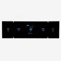
VFD3-1000-L: Universal 4.3" x 14" Rectangle, Digital InstrumentVFD3-1000-L$725.00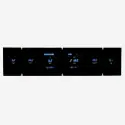
VFD3-1001-L: Universal 4.4" x 18.5" Rectangle, Digital InstrumentVFD3-1001-L, VFD3-1001-C$835.00 VFD3-1004: Universal Dual 4.5" Round, Digital InstrumentVFD3-1004$865.00
VFD3-1004: Universal Dual 4.5" Round, Digital InstrumentVFD3-1004$865.00 VFD3-1005: Universal Single 6.75" Round, Digital InstrumentVFD3-1005$865.00
VFD3-1005: Universal Single 6.75" Round, Digital InstrumentVFD3-1005$865.00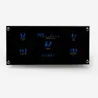
VFD3-1007: Universal 3.8" x 8.1" Rectangle, Digital InstrumentVFD3-1007$725.00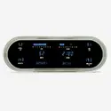
VFD3-1008: Universal 4.25" x 12" Oval, Digital VFD InstrumentVFD3-1008$965.00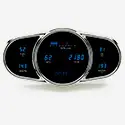
VFD3-1009: Universal 5" x 10" Multi-level Elliptical, Digital InstrumentVFD3-1009$995.00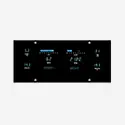
VFD3-1010: Universal 4.6" x 10" Rectangle, Digital InstrumentVFD3-1010$835.00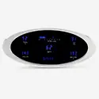
VFD3-1011: Universal 4" x 9.5" Elliptical, Digital InstrumentVFD3-1011$835.00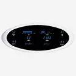
VFD3-1012: Universal 5" x 12.25" Elliptical, Digital InstrumentVFD3-1012$925.00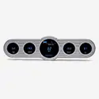
VFD3-CNTR-5: Universal 4" x 14.5" Street Rod Panel, Digital InstrumentVFD3-CNTR-5$815.00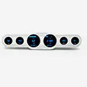
VFD3-CNTR-6: Universal 4" x 18" Street Rod Panel, Digital InstrumentVFD3-CNTR-6$885.00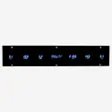
VFD3X-1002: Universal 3.5" x 19" Rectangle, Digital InstrumentVFD3X-1002$815.00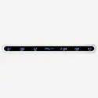
VFD3X-1002B: Universal 2" x 19" Oval, Digital VFD InstrumentVFD3X-1002B, VFD3X-1002B-C$875.00
Not sure what fits?
Talk to a tech in Sioux Falls, Monday to Friday, 8am to 5pm Central.